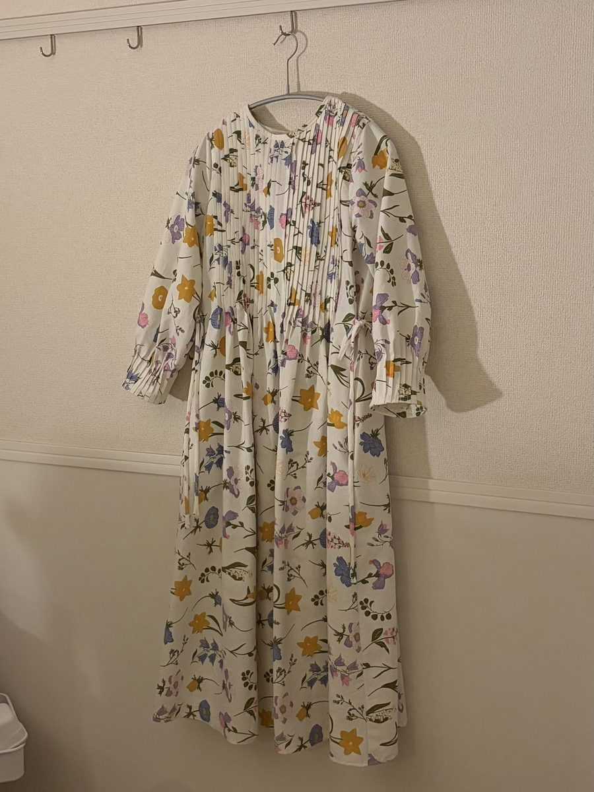
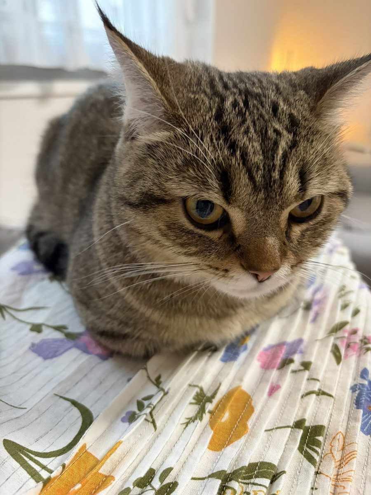
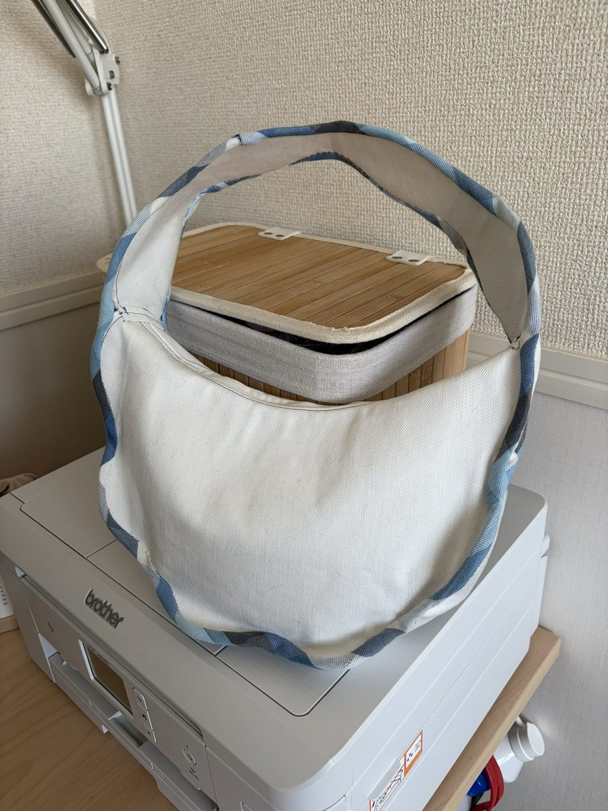
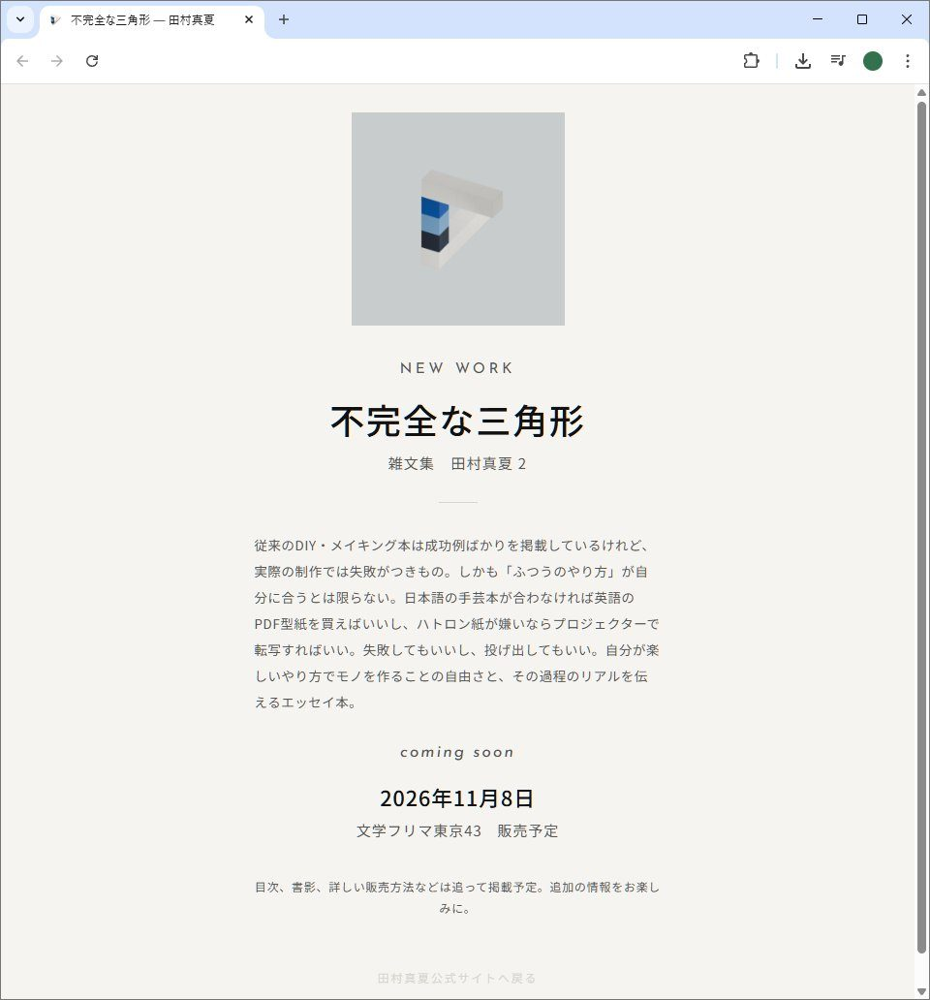

2026年4月の月報です。早いもので、2026年の3分の1が終わりましたね。わたしはとにかく裁縫、裁縫、裁縫をしていたような気がします。特に、2月中、友達の結婚式用にバッグやヘアアクセサリーを作ったのがすごく楽しくて、それによって自信がつきました。それで、4月はもっと裁縫プロジェクトに力を入れていました。
そして完成したのが、Frux StudioのGarden dressです。


自分ではじめてドレスを作りました。ピンタックを100本近く刺すという素晴らしいドレス。さわやかな雰囲気が春夏にぴったりだと思って製作を決めました。ちなみに、生地はフライングガーデンで売っていたコットン100%のテーブルクロスです！一日1,2時間ずつくらい、ちまちまと作業をしていって、仕上がったのはプロジェクト開始から約一ヶ月後。ビッグプロジェクトでしたが、それをするだけの価値があったと思います。
わたしがこのピンタックドレスの型紙を買ったのは、英語圏のインディーズパタンナーのWebサイトからです。いま、英語圏のインディーズパタンナーから裁縫のチュートリアル＋PDFファイルを買って裁縫をするのにハマっています。これも後述する新刊にぜひ書きたいと思っています！ とにかく、夢中なんです。毎日何かしらのパターンを見てはうっとりしたりワクワクしたりしています。インディーズパタンナーのチュートリアル＋PDFファイルは、非常に細かい説明をしてくれるところが多いのが特徴だと感じています。大手に負けないように、説明やサポートを手厚くしてくれているのかもしれません。今回わたしが買ったFrux StudioのGarden DressのチュートリアルはPDF形式で、型紙を合わせると80ページ近くあった記憶があります。でも、画像もたくさん載っているし、文字どおりステップバイステップで説明してくれるので、混乱するところはほとんどありませんでした。また、型紙補正の仕方を細かく説明して下さっていたのが非常によかったです。この型紙は173cmくらいの方に合わせて設計されていたと思います。わたしの身長は155cmなので、20cm近く補整することになりましたが、うまくできました。フレンチシーム（袋縫い）も初めてでしたが、なんとかできました！ ジグザグ縫いやオーバーロッカーに頼らない美しい縫製方法に惹かれているので、これで勉強できて本当によかったです。
間違いなく、わたしがミシンを買ってはじめての1年で出来た最高のドレスだと胸を張って言えます。これを着て外に出ると、気持ちが高揚します！作って良かった。そんなドレスでした。
Garden Dressを作ったら勢いがついて、年末から放ったらかしておいたウェーブレングスバッグの仕上げにとりかかることができました。バッグをバイアステープで仕上げるという面倒かつ素敵な試みで、さわやかな春のバッグになったよ！生地はユザワヤで買った中厚手のコットンに接着芯をつけたもの、バイアステープもユザワヤで買った布のハギレを繋げて製作しました。わたしはとにかくバイアステープに苦手意識があったのですが、これが終わったら本当に大丈夫だな、という気持ちになりました（笑）。

最後にひとつお知らせを。2026年11月8日の文学フリマ東京43への出展が決定しました。新刊『不完全な三角形』を出す予定で、現在その特設サイトも作成中です。

『不完全な三角形』は、ものづくりに関するエッセイ本です。構想当初は『Knitting&Sewing』というタイトルをつけていました。そのときちょうど編み物と縫い物のプロジェクトで手がいっぱいになっていて、それを記録するものが欲しかったんです。だけど、少し時間を置いて考えてみたら、わたしが手で作りたいものは編み物と縫い物とは限らないな、と気づきました。例えば、htmlサイト。阿部寛のサイトを参考にしながら、手で打ち込んだ。これが今見ていただいているWebサイトの原型です。また、初書籍『雑文集 田村真夏』も。これはわたしが自分で表紙・カバー・本文デザインをしました。「自分で」紙面を作る、ということをやってみたかった。これもものづくりのひとつなんじゃないかと思うのです。さらに、今は新しくblenderも始めてみました。CG制作とアナログのものづくりって、実はけっこう近いところにある気がします。どっちもちゃんと「造ってる」感覚があるんです。というわけで、それら全部をひっくるめたエッセイ本を作りたい、というかたちになりました。
『不完全な三角形』というタイトルは、本文中でも説明をするかとは思いますが、わたしのものづくりの姿勢をあらわしています。世の中の「手先が器用な人」って、本当にたくさんいらっしゃるじゃないですか。イラストがうまい！ 裁縫がうまい！ 器用な人を探したらきりがないです。正直いって、わたしの作っているものは「不完全」。言うならばペンローズの三角形をレゴで再現したみたいに、ある角度からは綺麗に見えるけれど、実際は綺麗には見えてない、なんてこともあるんです。でも、それを作った過程や工程そのものを愛したい。そんな気持ちでこのタイトルをつけました。普段ものづくりをする方はもちろん、ものづくりに興味がなくても、試行錯誤する過程を読みたい！ ああだこうだ言いながら作業している様子を見たい！ という方に楽しんで読んでもらえるように制作しています。
文学フリマで初出しする予定ですが、通販や電子版の販売も検討中です。それらの情報もご説明できるように、特設サイトの公開の準備をしています。ぜひ楽しみにしていてください！
文学フリマに出ることを決めて、一日中あの混雑している会場にいる体力をつけなければな…… と思い（笑）、運動をはじめています。みなさんに会えるのが本当に楽しみです！ ぜひ、よろしくお願いします。
それじゃあ、またね！